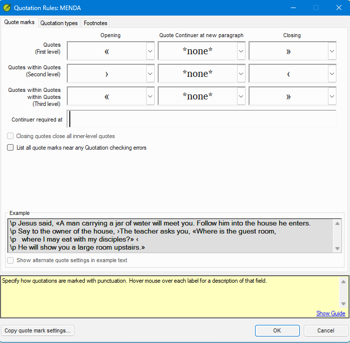
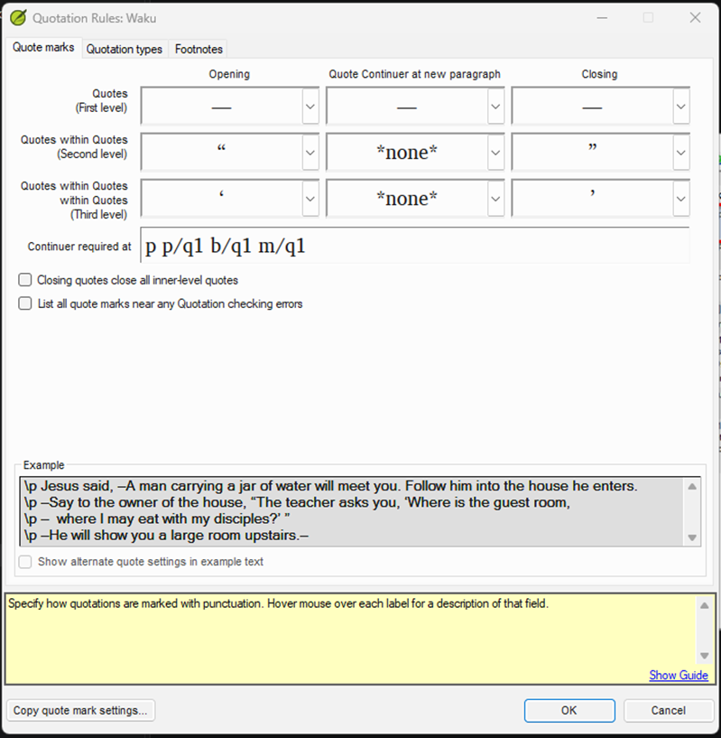
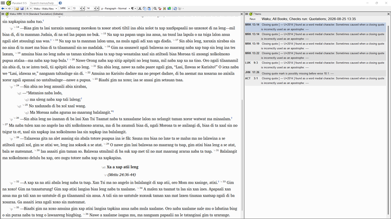

Scenario Bank — Language Scenario Practice¶
Estimated time: 90 minutes
Three independent scenarios, roughly 30 minutes each. Scenarios A and B are core practice; Scenario C (Waku em-dash) is an optional stretch for learners who complete A and B confidently. Do them in any order. Each uses its own fictional project — see the mentor guide for how the facilitator distributes them.
Learning objectives: By the end of this scenario bank you will be able to apply the complete inventory + rules + check + triage workflow independently to an unfamiliar language scenario, including edge cases not covered in Lessons 1–4.
These exercises use three new fictional projects. Each has a different quotation style. For each scenario follow the same four-step workflow — inventory → rules → check → triage — broken into eight concrete actions:
Inventory
- Read the language conventions table.
- Answer the discovery prompts before configuring anything.
- Open the Quote marks tab; the fields will be empty.
- Enter the quote mark characters on the Quote marks tab.
Rules
- Configure the Quotation types tab.
Check
- Run the check (start with one book).
Triage
- Triage the results to zero actionable errors.
- Compare your configuration against the expected answer key.
Scenario A — Guillemet (French style)¶
Project: Velna New Testament (velna)
Velna quotation conventions:
| Level | Opening | Unicode | Closing | Unicode |
|---|---|---|---|---|
| First level | « |
U+00AB | » |
U+00BB |
| Second level | ‘ |
U+2018 | ’ |
U+2019 |
No Third level. First level opening mark « also appears at the start of continued paragraphs.
Discovery prompts:
- Velna uses ’ (U+2019) as both its Second level closing mark and as an apostrophe. Try adding ’ to Word-medial punctuation as Lesson 2 taught — does it actually clear the resulting check result here too?
- How would you verify that the text contains « (U+00AB) rather than << (two less-than signs)?
Expected configuration:
| Level | Opening | Quote Continuer at new paragraph | Closing |
|---|---|---|---|
| First level | « |
« |
» |
| Second level | ‘ |
(blank) | ’ |
Word-medial punctuation: add ’ (U+2019) in ☰ > Project settings > Language Settings > Other Characters tab > Word-medial punctuation — do this anyway, since it's the correct habit to build, but confirmed on a real Paratext 9.5 build, it will not stop the check from flagging Velna's word-medial apostrophes. That's expected: once ’ is already a configured quote mark, this setting has no effect on it. Treat any remaining apostrophe results as verified false positives, not something left to configure away. Since Velna's orthography is fictional and effectively still "in development" for this exercise, this is also the right moment to raise the real fix with learners: if this were a live translation team's project, this is exactly when you'd recommend adopting a different, unique apostrophe character — Lesson 2 names ʼ (U+02BC MODIFIER LETTER APOSTROPHE) as a concrete option — rather than living with the collision indefinitely. Velna itself keeps ’ for its apostrophes so the scenario still demonstrates the unresolvable case firsthand; the ʼ alternative is illustrated in Lesson 2's text, not built into this project.
Quotation types tab: confirmed on a real Paratext 9.5 build: Velna needs exactly one change from recommended defaults — Continued quotation = Use quote marks (the First level continuer means a mark is expected at every continued paragraph, same reasoning as Tamba in Lesson 3). Unlike Tamba, Velna has no narrator-citation, self-quote, or indirect-speech exceptions, so every other type — Normal, Quotation from another source, Self quote, Potential, Indirect, Hypothetical — stays at its recommended default.
Check your work:
- After configuration, run the check on Luke. Verify that «...» speech boundaries are recognized correctly and narrative passages generate no results.
- Confirm that apostrophes inside words (contractions, possessives) are still flagged even after configuring Word-medial punctuation — that's the expected, confirmed outcome for this collision, not a sign of a missing setting. Verify each is a genuine apostrophe and move on.
- Confirm the First level Quote Continuer («) at the start of continued paragraphs is not flagged as an unexpected mark.
- Enable the Quotation types check and run it on Matthew, Luke, and John. It should return clean once Continued quotation is set to Use quote marks — this check is separate from the apostrophe results above, which live in the Quotations check and remain regardless.
Scenario B — Angle-bracket guillemets (French/German style with nesting reversal)¶
Project: Menda New Testament (menda)
Menda quotation conventions:
| Level | Opening | Unicode | Closing | Unicode |
|---|---|---|---|---|
| First level | « |
U+00AB | » |
U+00BB |
| Second level | › |
U+203A | ‹ |
U+2039 |
| Third level | « |
U+00AB | » |
U+00BB |
Note: At Second level Menda uses single guillemets in reversed order — the › (U+203A, right-pointing) opens the embedded speech and ‹ (U+2039, left-pointing) closes it. This is unusual and easy to get wrong.
At Third level Menda returns to double guillemets — « opens and » closes, the same characters as First level. Third level is rare; John 19:21 is the key example.

Discovery prompts:
- Why might it be confusing that the opening mark for Second level is the right-pointing single guillemet? What would happen if you entered it in the Closing field by mistake?
- How would you verify which direction the single guillemet in the text actually points? (Hint: use the dropdown list on each field — hover each character option to read its name in the list.)
- If a verse shows «Il a dit ‹oui›» and the check flags Second level as having incorrect marks, what is the most likely cause?
- John 19:21 nests speech three levels deep. What characters does Menda use at the Third level, and what will the check report at 19:21 if the Third level cells are left blank?
Expected configuration:
| Level | Opening | Quote Continuer at new paragraph | Closing |
|---|---|---|---|
| First level | « |
(blank) | » |
| Second level | › |
(blank) | ‹ |
| Third level | « |
(blank) | » |
Continuation: none. Apostrophe handling: not needed — Menda's Quote marks tab does not use U+2019, so no Word-medial punctuation setting is required.
Quotation types tab: unlike Tamba (Lesson 3), Menda needs no customization at all — leave it on Use recommended settings. Confirmed on a real Paratext 9.5 build: with the Quotation types check enabled, Menda's text passes clean at the recommended defaults (Normal/Quotation from another source/Self quote = Use quote marks; Continued quotation = Never use quote marks; Potential/Indirect = Quote marks are optional; Hypothetical = Never use quote marks). Step 5 of the scenario workflow still applies — open the tab, tick the enable checkbox (administrator required), and verify with a check run — but for Menda that verification is the whole task; there is nothing to change.
Check your work:
- Run the check on John (contains clear nested dialogue). Verify that «...›...‹...» structures pass without errors.
- If the check fires on every Second level opening mark, the Opening and Closing fields for Second level are likely reversed. Confirm which character is right-pointing (›) and which is left-pointing (‹).
- After entering Second level, check the Example section at the bottom. If › opens and ‹ closes in the example, you have the correct order. The visual difference between › and ‹ is easy to miss — use the Example to confirm before clicking OK.
- John 19:21 contains Menda's rare Third level quotation. Verify it passes once Third level is configured — if 19:21 is flagged, the Third level cells are probably still empty.
- Enable the Quotation types check and run it on John. It should return clean at recommended settings with no customization — if it doesn't, re-check your Quote marks tab entries first, since a character-level mistake there is more likely than a genuine need to customize types.
Scenario C — Non-standard marks with continuation¶
Project: Waku New Testament (waku)
Waku quotation conventions:
| Level | Opening | Unicode | Closing | Unicode |
|---|---|---|---|---|
| First level | — |
U+2014 | — |
U+2014 |
| Second level | “ |
U+201C | ” |
U+201D |
| Third level | ‘ |
U+2018 | ’ |
U+2019 |
Waku uses an em dash (U+2014) for both the opening and closing mark at First level. Multi-paragraph speech does not restart the em dash — it uses a continuation mark of — (another em dash) at the start of each continued paragraph. Waku's word-medial apostrophe is ʼ (U+02BC MODIFIER LETTER APOSTROPHE), so the Third level closer ’ (U+2019) creates no apostrophe collision.
Discovery prompts: - When the same character is used for both opening and closing, how does Paratext know which is which? What rule does it rely on? - Waku uses the em dash as a continuation mark. Should the continuation mark be a different character from the opening mark, or can it be the same character? What happens if they are the same? - In a language where em dash is also used for parenthetical remarks (not speech), how would you expect the check to behave? Is there a way to address this?
Expected configuration:
| Level | Opening | Quote Continuer at new paragraph | Closing |
|---|---|---|---|
| First level | — |
— |
— |
| Second level | “ |
(blank) | ” |
| Third level | ‘ |
(blank) | ’ |
Continuation: — (em dash, same character) at First level only. The verified configuration
also fills Continuer required at with p p/q1 b/q1 m/q1 — the paragraph-marker contexts
where the check must insist on the continuer. Copy it exactly; without it the check does not
enforce the continuer at those paragraph breaks.

Note on same-character open/close: When the same character serves as both opener and closer, Paratext relies on structural context (paragraph markers, verse boundaries, and surrounding text flow) to determine which role the em dash plays. Because this context-based interpretation may not resolve every case unambiguously, human review of flagged em-dash results is always required for Waku.
Check your work:
- Run the check on Acts (extended speeches, heavy use of em-dash dialogue). Verify that multi-paragraph speeches with continuation marks do not generate "unclosed quote" errors.
- Check a verse where em dash is used for a parenthetical aside (not speech). Does the check flag it? What is the correct response — fix the text (replace the em dash with different punctuation for the parenthetical), reconfigure if possible, or document in a Project Note for the consultant?
- This scenario leaves results that cannot be eliminated by configuration alone — because Paratext cannot distinguish an em dash used as speech from one used as a parenthetical dash. Confirmed on a real Paratext 9.5 build, a correct configuration run against all books ends at seven results: six "found as a word medial character" results on genuine parenthetical em dashes (Mark 13:14 twice, 13:19, 13:22; Luke 9:3; Acts 3:1), plus one "Closing quote mark is possibly missing before verse 18:1" at John 17:26.
- The John 17:26 result is a different residual class from the parentheticals: the text there is correct — Jesus's prayer (17:1–26) opens with —, carries the — continuer at every paragraph, and closes with — at the end of verse 26 — but with the same character serving as opener, closer, and continuer across a long multi-paragraph speech, Paratext's context-based tracking loses the open/close state and reports the speech as possibly unclosed. No text change fixes it without breaking Waku's convention. Verify the marks are all present, then document.
- For all seven: consider whether the parenthetical verses can be reworded to use different punctuation. Where rewording is not feasible (and always for John 17:26, where the text is already correct), add a Project Note (☰ > Insert > Project note...) explaining the result so the consultant can verify during review.

Scenario bank summary¶
- The same four-step workflow (inventory → rules → check → triage) applies to every language, however unusual its quotation conventions.
- Always verify entered characters using the Example section at the bottom of the Quote marks tab — on unfamiliar languages it is easy to confuse visually similar characters.
- Some languages (like Waku) will always require human review of residual results; zero configuration errors does not always mean zero results.
Scenario check-your-understanding¶
- You enter Second level Opening as
‹and Second level Closing as›for the Menda project, then run the check and find that every Second level opening mark generates a result. The Example section in the Quote marks tab shows the marks in reversed order from what you expect. What went wrong, and what is the fix? - In Scenario B you enter Second level as Opening: U+2039, Closing: U+203A (reversed from the correct order). What will the check report?
- After completing Scenario C (Waku), 7 results remain in the Basic Checks panel — six em dashes used as parenthetical remarks (not speech), plus one "possibly missing" result on a multi-paragraph speech whose marks are all correctly in place. Configuration cannot eliminate them. What are your options?
Answers
- The characters were entered in the wrong fields — the left-pointing guillemet (
‹, U+2039) is in the Opening field when it should be in the Closing field, and vice versa. Swap them: Opening should be›(right-pointing, U+203A), Closing should be‹(left-pointing, U+2039). Confirm by checking the Example section — the correct order shows›as the inner opening and‹as the inner closing. - The check will fire on every Second level opening mark (treating the right-pointing guillemet as an unexpected closing mark) and on every Second level closing mark (treating the left-pointing guillemet as an unexpected opening mark). The entire Second level configuration will appear as errors.
- Two options: (1) For the parentheticals, rewrite the affected verses to use different punctuation for parenthetical remarks (e.g. brackets or a non-speech dash character), which removes the ambiguity and clears the results. (2) Where rewording is not feasible — and always for the multi-paragraph result, where the text is already correct and there is nothing to rewrite — add a Project Note (☰ > Insert > Project note...) to each verse explaining what the flagged em dash actually is, so the consultant can verify during review. The Basic Checks panel results will remain; documenting them prevents them from being mistaken for unreviewed errors.
Where to Go from Here¶
How the Quotation check fits in the Paratext checking workflow¶
The Quotation check is one of the Basic Checks in Paratext 9.5 (run via ☰ > Tools > Run basic checks...). Basic Checks are typically run and cleared before a book moves to Consultant Check (CC). A consultant reviewer will re-run the checks during review, so the goal is a configuration that genuinely models the language — not a result list silenced by editing correct text.
The recommended sequence for a book heading toward CC:
- Run all Basic Checks (Quotations, Characters, Markers, Footnotes, and others).
- Clear each check to zero results by fixing text errors and refining the configuration.
- Where a residual result cannot be cleared by configuration (see Scenario C), document it with a Project Note so the consultant can verify it quickly.
The Quotation check does not need to be perfect before work continues, but it must be clean before CC begins.
Maintaining the configuration over time¶
Quotation Rules are set once per project and persist across sessions, but they need attention when:
- New text is added. Re-run the check after each significant drafting session; new text may introduce new errors.
- A new translator joins. Check whether they are typing the correct Unicode characters. Open the Quote marks tab and use the dropdown on each field to confirm the selected character, or check the Example section — if the marks look wrong in the example, a find-and-replace on the new chapters may be needed.
- A new book is started. Some books (like Psalms, Proverbs, or Revelation) have different poetry/prose ratios. Re-run the check after completing the first draft to confirm that poetry lines (
\q,\q2) are not generating false quotation results.
Copying Quotation Rules to another project¶
If your language has more than one translation project (for example, a study Bible alongside the main translation), you do not need to reconfigure the Quote marks tab from scratch. Paratext 9.5 can copy settings from a base project:
Open ☰ > Project settings > Quotation Rules on the destination project. At the bottom of the dialog, click Copy quote mark settings... and select the already-configured project as the source. Review every field after copying — differences in verse structure or text conventions between the two projects may require adjustments.
What a well-configured project looks like¶
A project with correctly configured Quotation Rules will:
- Return zero results in purely narrative passages with no speech.
- Return zero results on apostrophes and possessives.
- Flag only genuine mismatches — missing marks, extra marks, wrong-level marks — in speech sections.
- Have any residual results (where the same character serves two linguistic purposes and configuration cannot distinguish them) documented in Project Notes (☰ > Insert > Project note...) so a consultant reviewer can verify them without asking for clarification.
Reaching that state is what this course has prepared you to do.
Previous: Lesson 4 — Interpreting and Clearing the Check · Assessment: Quiz